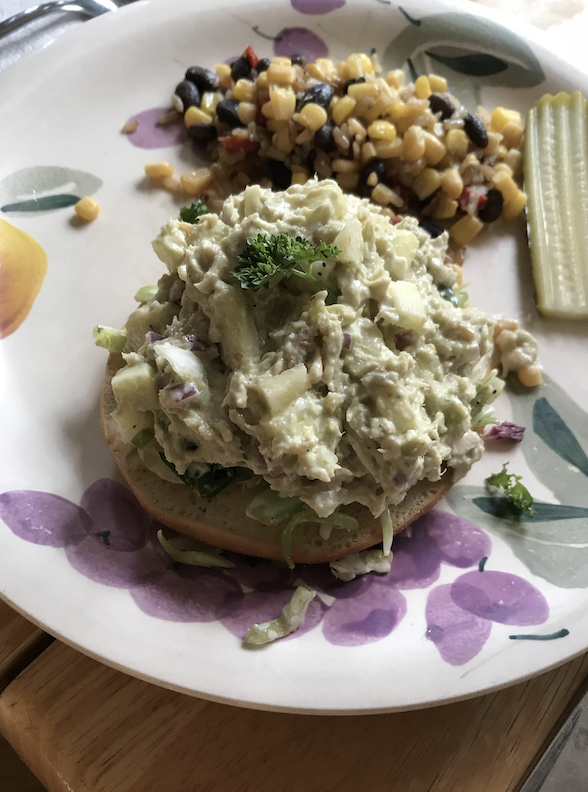

Avocado Tuna Salad

Description
This tasty avocado tuna salad with crunchy apple, toasted walnuts, celery, red onion, and dill proves that tuna salad doesn't have to be boring! The mayo is optional in this recipe - the mashed avocado will give it a creamy texture. Serve on top of greens, or enjoy it all by itself.
Ingredients
- 1 ripe avocado
- 2 (5 ounce) cans flaked light tuna
- ½ red apple, chopped
- ½ cup chopped red onion
- ½ cup chopped celery
- ¼ cup chopped toasted walnuts
- 2 tablespoons mayonnaise (Optional)
- 1 tablespoon pickle juice
- 1 teaspoon dried dill weed
- ½ teaspoon Dijon mustard
- ¼ teaspoon ground cumin
- salt and pepper to taste
Steps
- Cut avocado in half, scoop out the flesh into a large bowl, and mash avocado with the back of a fork or potato masher. Add tuna, apple, onion, celery, toasted walnuts, mayonnaise, pickle juice, dill, Dijon mustard, cumin, salt, and pepper; mix well.